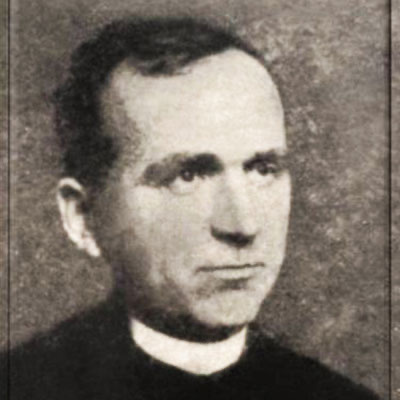

Isusovački blaženici
Isusovac · Svećenik · Mučenik
Bl. Daniel Dajani
1906.–1946.
Albanski svećenik i odgojitelj vodio je sjemenište u Skadru te nakon dolaska komunističke vlasti bio uhićen i ubijen među albanskim mučenicima dvadesetoga stoljeća.
Tekst je preveden i prilagođen uz pomoć umjetne inteligencije.

Izvor slike
- Spomendan
- 4. ožujka
- Zaštitništvo
- Nije navedeno u izvoru
- Životni vijek
- 1906.–1946.
- Ulazak u Družbu
- 1926.
- Svećeničko ređenje
- 1938.
- Mučeništvo
- 4. ožujka 1946., prema povezanom životopisu Giovannija Faustija
- Beatifikacija
- 5. studenoga 2016.
- Napomena o izvoru
- Povezani Faustijev životopis potvrđuje 4. ožujka 1946.; Dajanijev tekst na jednom mjestu pogrešno navodi 1936.
U kalendaru zbirke koristi se dan smrti. Taj datum nije zasebna potvrda liturgijskoga spomendana.
Životopis
Daniel Dajani pristupio je Družbi Isusovoj 1926. Nakon filozofskoga i teološkoga školovanja zaređen je za svećenika 1938. Djelovao je kao nastavnik u Albaniji, osobito u Skadru.
Kao rektor Papinskoga sjemeništa u Albaniji uhićen je 31. prosinca 1945. zajedno s Giovannijem Faustijem. Ubijen je u komunističkom progonu Crkve 1946. Pripada skupini trideset osmorice albanskih mučenika. S Faustijem i bratom Gjonom Pantalijom proglašen je blaženim 5. studenoga 2016.
Tekst je preveden i prilagođen uz pomoć umjetne inteligencije.